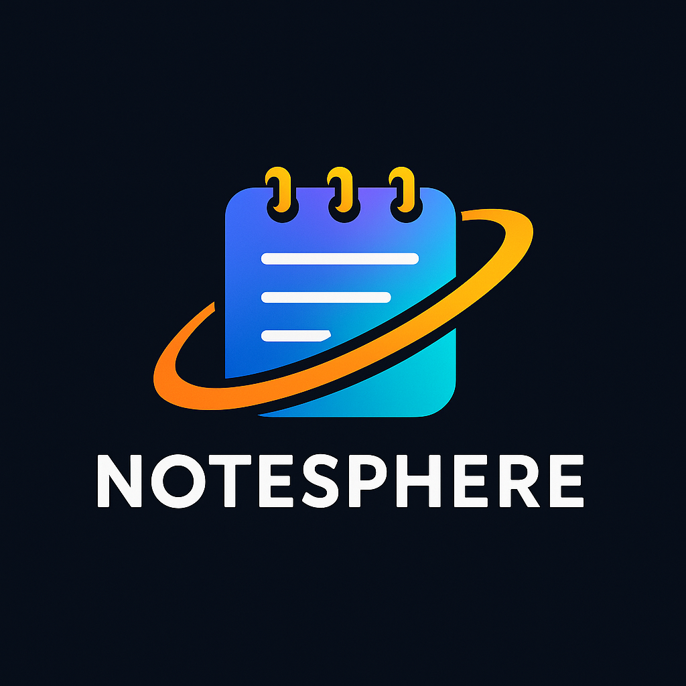

🗒️ NoteSphere — Node.js, Express, MongoDB
NoteSphere is a secure note-taking app I built using Node.js, Express, and MongoDB. Users can write, save, edit,
and delete notes — all backed by full CRUD functionality and user authentication. I used Mongoose to structure the
data and simplify database operations, and Express middleware to handle routes and protect endpoints. This project
helped me solidify my understanding of REST APIs and backend architecture.